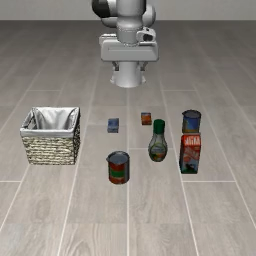
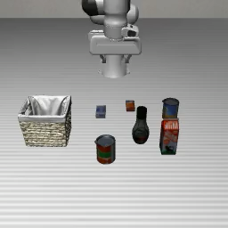

LIBERO-Plus · 同任务，扰动环境
背景泛化原始任务参考 · 训练任务类型

指令输入
Pick the alphabet soup and place it in the basket.
拿起字母汤罐，放进篮子。
Plus 测试案例 · 环境扰动

指令输入
Pick the alphabet soup and place it in the basket.
拿起字母汤罐，放进篮子。
对比变化木纹环境 → 条纹桌面；指令与目标类别不变。
考查目标背景改变后仍应找到字母汤罐并放进篮子；按环境扰动组统计成功率。
图像为官方演示首帧。左图来自 PRO 原始 LIBERO 条件，右图来自 Plus 环境扰动演示；并非同一初态的严格配对，物体布局也有变化，不能用这两张图单独归因背景影响。